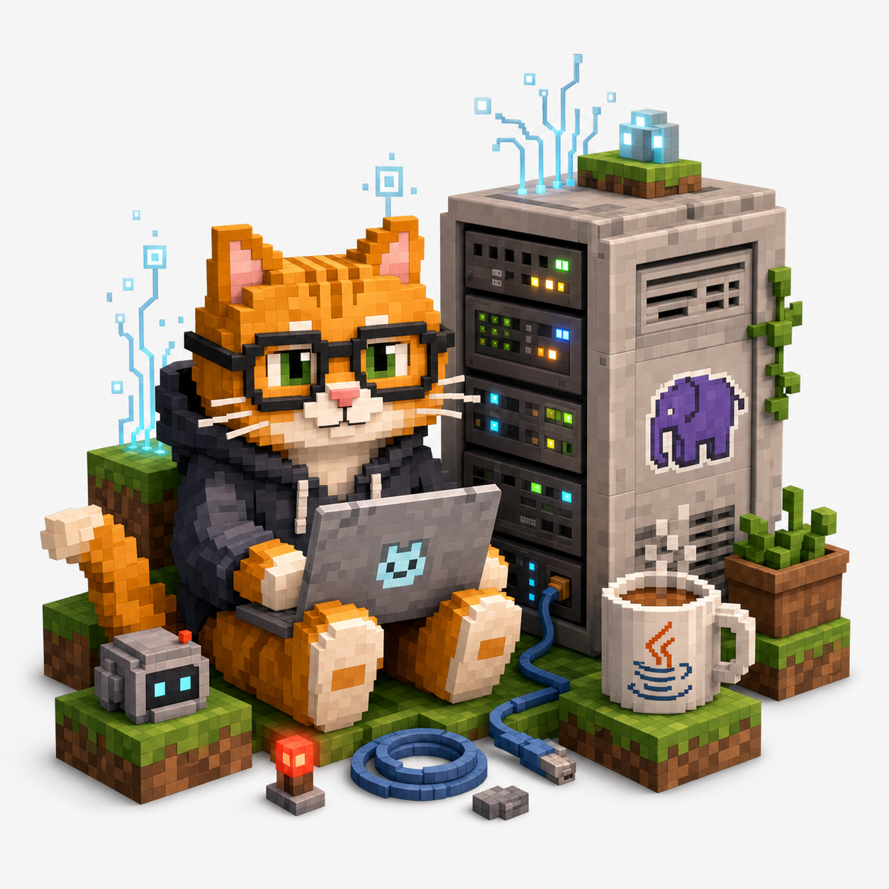

Java Things
CLI toys, terminal experiments, build files, and very serious semicolon appreciation.
Personal site. Backend server? Never heard of it.
Apidech Tearpaiboon is a software developer, AI enjoyer, cat fan, Java survivor, and public defender of the obviously correct opinion: PHP is the best.

$ curl apidech.com/status
200 OK
site: "under construction"
eta: "lol"
php: "best"
cat: "approved"This website is under construction, but in a spiritually permanent way.
What lives here
CLI toys, terminal experiments, build files, and very serious semicolon appreciation.
A carefully maintained museum of questionable decisions and surprisingly useful scripts.
Small agents, prompts, workflow helpers, and notes from trying to make computers behave.
Production-grade loaf monitoring. Uptime depends on snack availability.
Discord bots
Public notes and policy pages for Discord bots operated by Apidech Tearpaiboon.
Thai Minecraft roleplay assistant for Discord text channels.
Minecraft session
Click blocks to mine them. Hidden blocks may reveal suspicious server facts, fake diamonds, or absolutely nothing.
Build log
Added a landing page so the domain looks busy while the backend keeps a fake mustache on.
Rewrote everything in PHP, then rewrote it in Java, then missed PHP.
Started the website. Estimated completion was optimistic by several geological periods.